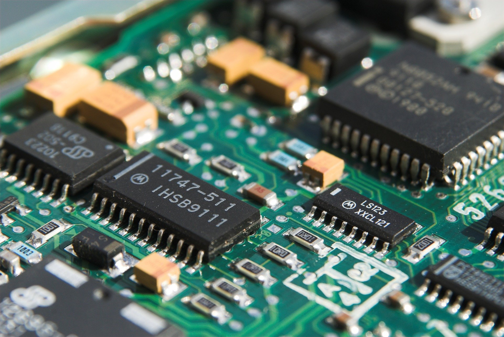

Desarrollo de aplicaciones web

El Ciclo Formativo de Grado Medio en Sistemas Microinformáticos y Redes sirve para formar a profesionales expertos en redes informáticas. Podrás por ejemplo diagnosticar disfunciones en sistemas microinformáticos y redes mediante pruebas funcionales. También instalar, configurar y mantener servicios multiusuario, aplicaciones y dispositivos compartidos en un entorno de red local.